hour_of_day cash_type money coffee_name Time_of_Day Weekday
1 10 card 38.7 Latte Morning Fri
2 12 card 38.7 Hot Chocolate Afternoon Fri
3 12 card 38.7 Hot Chocolate Afternoon Fri
4 13 card 28.9 Americano Afternoon Fri
5 13 card 38.7 Latte Afternoon Fri
6 15 card 33.8 Americano with Milk Afternoon Fri
Month_name Weekdaysort Monthsort Date Time
1 Mar 5 3 2024-03-01 10:15:50.520000
2 Mar 5 3 2024-03-01 12:19:22.539000
3 Mar 5 3 2024-03-01 12:20:18.089000
4 Mar 5 3 2024-03-01 13:46:33.006000
5 Mar 5 3 2024-03-01 13:48:14.626000
6 Mar 5 3 2024-03-01 15:39:47.726000Preparación de los datos para el modelado
1 Descripción del problema
Este conjunto de datos contiene registros de transacciones de cafeterías, incluyendo detalles sobre ventas, tipo de pago, hora de compra y preferencias del cliente.
Con atributos que abarcan la hora del día, los días de la semana, los meses, los tipos de café y los ingresos, este conjunto de datos proporciona una base sólida para analizar el comportamiento del cliente, los patrones de ventas y las tendencias de rendimiento empresarial.
Estructura del conjunto de datos:
- hour_of_day: Hora de compra (0–23)
- cash_type: Forma de pago (efectivo/tarjeta)
- money: Importe de la transacción (en moneda local)
- coffee_name: Tipo de café comprado (p. ej., Latte, Americano, Chocolate caliente)
- Time_of_Day: Hora de compra (mañana, tarde, noche)
- Weekday: Día de la semana (p. ej., lun., mar., etc.)
- Month_name: Mes de compra (p. ej., ene., feb., mar.)
- Weekdaysort: Representación numérica para ordenar por día de la semana (1 = lun., 7 = dom.)
- Monthsort: Representación numérica para ordenar por mes (1 = ene., 12 = dic.)
- Date: Fecha de la transacción (AAAA-MM-DD)
- Time: Hora exacta de la transacción (HH:MM:SS)
A continuación vamos a detectar de que clase es cada una de las variables
clases <- sapply(datos, class)
varNum <- names(clases)[which(clases %in% c("numeric", "integer"))]
varCat <- names(clases)[which(clases %in% c("character", "factor"))]Para poder realizar una descriptiva correcta, descartaremos las variables Time y Date.
2 Data describe

2.1 Univariant analysis
2.1.1 Numerical
2.1.1.1 Description
library(psych)
psych::describe(datos[, varNum]) vars n mean sd median trimmed mad min max range skew
hour_of_day 1 3547 14.19 4.23 14.00 14.11 5.93 6.00 22.0 16.00 0.12
money 2 3547 31.65 4.88 32.82 31.98 4.36 18.12 38.7 20.58 -0.54
Weekdaysort 3 3547 3.85 1.97 4.00 3.81 2.97 1.00 7.0 6.00 0.08
Monthsort 4 3547 6.45 3.50 7.00 6.42 4.45 1.00 12.0 11.00 0.00
kurtosis se
hour_of_day -1.13 0.07
money -0.67 0.08
Weekdaysort -1.23 0.03
Monthsort -1.38 0.062.1.1.2 Graphic
for (var in varNum) {
hist(datos[, var], main = paste0("Histograma variable ", var))
boxplot(datos[, var], main = paste0("Boxplot variable ", var))
}
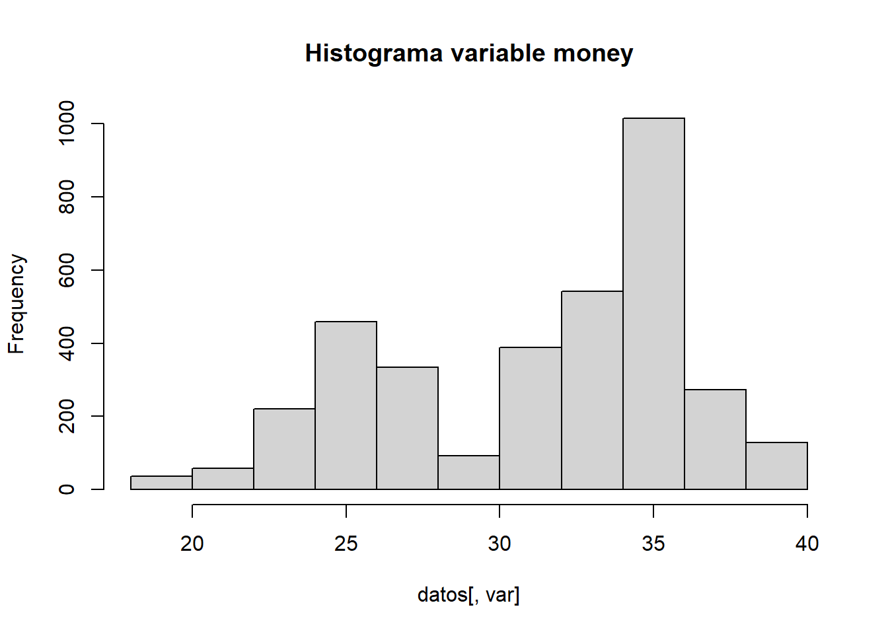
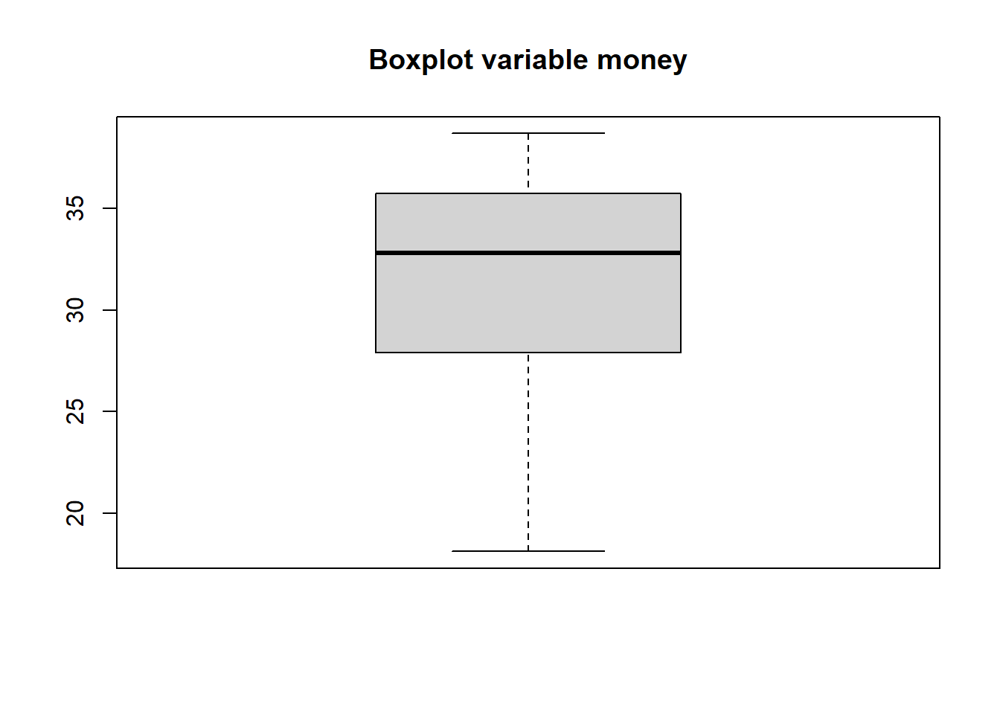
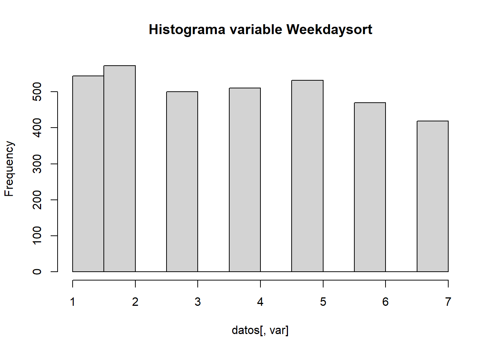
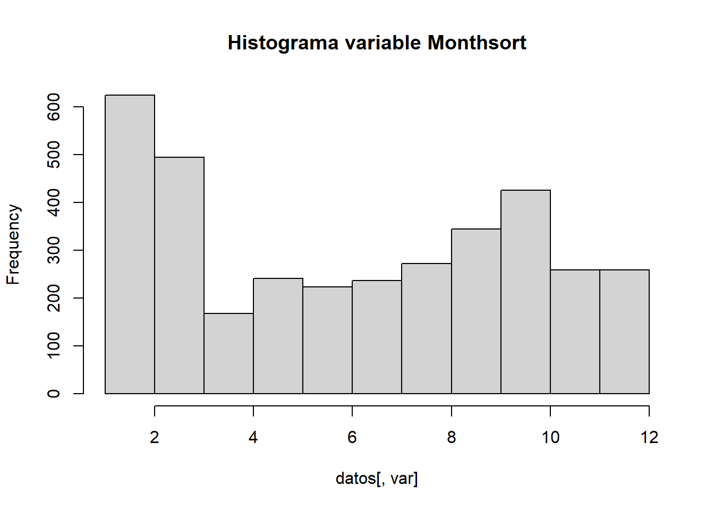

library(ggplot2)
Adjuntando el paquete: 'ggplot2'The following objects are masked from 'package:psych':
%+%, alphafor (var in varNum) {
# Histograma
grafico <- ggplot(datos, aes(x = get(var))) +
geom_histogram(aes(y = ..density..), colour = "black", fill = "white")+
geom_density(alpha=.2, fill="#FF6666") +
geom_vline(aes(xintercept = mean(get(var))),
color="blue", linetype = "dashed", linewidth = 1)
print(grafico)
# Boxplot
grafico2 <- ggplot(datos, aes(x=get(var))) +
geom_boxplot(outlier.colour="red", outlier.shape=8,
outlier.size=4)
print(grafico2)
}Warning: The dot-dot notation (`..density..`) was deprecated in ggplot2 3.4.0.
ℹ Please use `after_stat(density)` instead.`stat_bin()` using `bins = 30`. Pick better value with `binwidth`.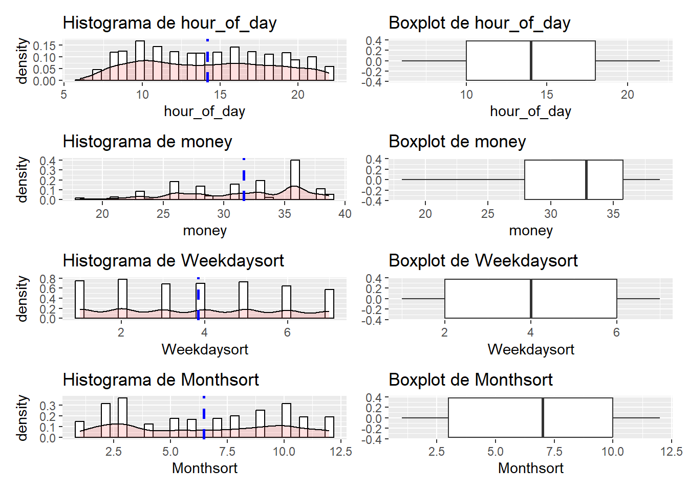

`stat_bin()` using `bins = 30`. Pick better value with `binwidth`.
`stat_bin()` using `bins = 30`. Pick better value with `binwidth`.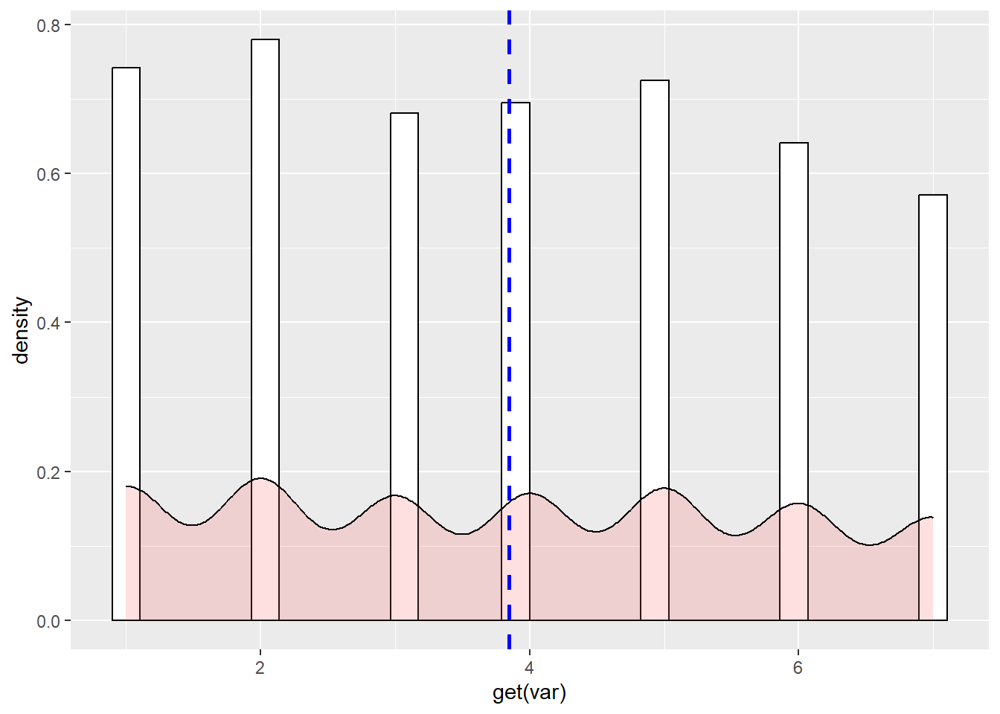

`stat_bin()` using `bins = 30`. Pick better value with `binwidth`.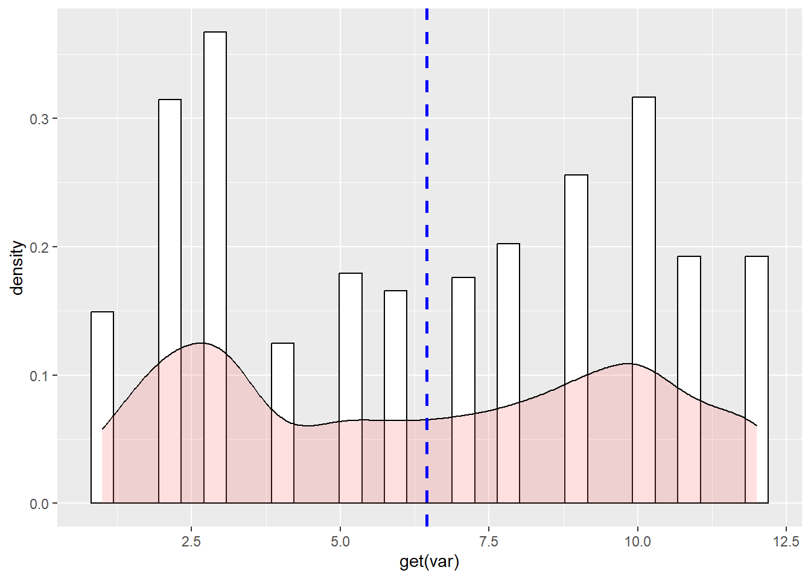
2.1.2 Categorical
2.1.2.1 Description
for (var in varCat) {
tablaAbs <- data.frame(table(datos[, var]))
tablaFreq <- data.frame(table(datos[, var])/sum(table(datos[, var])))
m <- match(tablaAbs$Var1, tablaFreq$Var1)
tablaAbs[, "FreqRel"] <- tablaFreq[m, "Freq"]
colnames(tablaAbs) <- c("Categoria", "FreqAbs", "FreqRel")
cat("===============", var, "===================================\n")
print(tablaAbs)
cat("==================================================\n")
}=============== cash_type ===================================
Categoria FreqAbs FreqRel
1 card 3547 1
==================================================
=============== coffee_name ===================================
Categoria FreqAbs FreqRel
1 Americano 564 0.15900761
2 Americano with Milk 809 0.22808007
3 Cappuccino 486 0.13701720
4 Cocoa 239 0.06738089
5 Cortado 287 0.08091345
6 Espresso 129 0.03636876
7 Hot Chocolate 276 0.07781224
8 Latte 757 0.21341979
==================================================
=============== Time_of_Day ===================================
Categoria FreqAbs FreqRel
1 Afternoon 1205 0.3397237
2 Morning 1181 0.3329574
3 Night 1161 0.3273189
==================================================
=============== Weekday ===================================
Categoria FreqAbs FreqRel
1 Fri 532 0.1499859
2 Mon 544 0.1533690
3 Sat 470 0.1325063
4 Sun 419 0.1181280
5 Thu 510 0.1437835
6 Tue 572 0.1612630
7 Wed 500 0.1409642
==================================================
=============== Month_name ===================================
Categoria FreqAbs FreqRel
1 Apr 168 0.04736397
2 Aug 272 0.07668452
3 Dec 259 0.07301945
4 Feb 423 0.11925571
5 Jan 201 0.05666761
6 Jul 237 0.06681703
7 Jun 223 0.06287003
8 Mar 494 0.13927262
9 May 241 0.06794474
10 Nov 259 0.07301945
11 Oct 426 0.12010149
12 Sep 344 0.09698337
==================================================2.1.2.2 Graphic
for (var in varCat) {
barplot(table(datos[, var]))
}
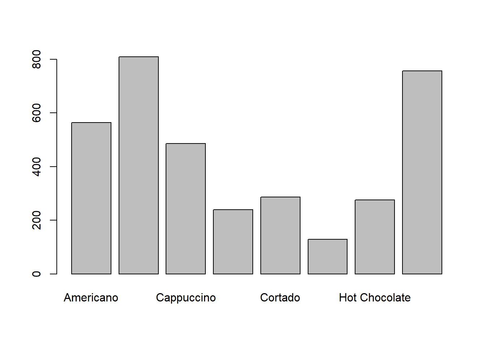
for (var in varCat) {
tabla <- data.frame(table(datos[, var])/sum(table(datos[, var])))
p <- ggplot(data = tabla, aes(x = Var1, y = Freq)) +
geom_bar(stat = "identity", fill = "steelblue")+
geom_text(aes(label=paste0(round(Freq, 2)*100, "%")), vjust=1.6, color="white", size=3.5)+
theme_minimal()
print(p)
}


2.2 Bivariant analysis
2.2.1 Numerical vs. numerical
2.2.1.1 Description
cor(datos[, varNum]) hour_of_day money Weekdaysort Monthsort
hour_of_day 1.000000000 0.20274794 -0.002613959 0.008292999
money 0.202747935 1.00000000 -0.017264091 -0.050043191
Weekdaysort -0.002613959 -0.01726409 1.000000000 0.044140930
Monthsort 0.008292999 -0.05004319 0.044140930 1.0000000002.2.1.2 Graphic
library(PerformanceAnalytics)Cargando paquete requerido: xtsCargando paquete requerido: zoo
Adjuntando el paquete: 'zoo'The following objects are masked from 'package:base':
as.Date, as.Date.numeric
Adjuntando el paquete: 'PerformanceAnalytics'The following object is masked from 'package:graphics':
legendchart.Correlation(as.matrix(datos[, varNum]),histogram = TRUE,pch=12)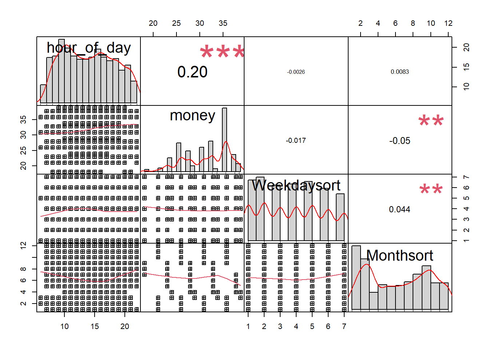
library(ggcorrplot)Warning: package 'ggcorrplot' was built under R version 4.4.3corr <- round(cor(datos[, varNum]), 1)
ggcorrplot(corr, lab = T)
2.2.2 Numerical vs. categorical
2.2.2.1 Description
for (varN in varNum) {
for (varC in varCat) {
print(psych::describeBy(datos[, varN], group = datos[, varC]))
}
}
Descriptive statistics by group
group: card
vars n mean sd median trimmed mad min max range skew kurtosis se
X1 1 3547 14.19 4.23 14 14.11 5.93 6 22 16 0.12 -1.13 0.07
Descriptive statistics by group
group: Americano
vars n mean sd median trimmed mad min max range skew kurtosis se
X1 1 564 13.19 3.7 13 13 4.45 6 22 16 0.42 -0.53 0.16
------------------------------------------------------------
group: Americano with Milk
vars n mean sd median trimmed mad min max range skew kurtosis se
X1 1 809 13.62 4.31 13 13.39 4.45 6 22 16 0.37 -1.09 0.15
------------------------------------------------------------
group: Cappuccino
vars n mean sd median trimmed mad min max range skew kurtosis se
X1 1 486 14.92 4.23 15 15.05 5.93 6 22 16 -0.22 -1.05 0.19
------------------------------------------------------------
group: Cocoa
vars n mean sd median trimmed mad min max range skew kurtosis se
X1 1 239 15.26 4.26 16 15.4 5.93 7 22 15 -0.28 -1.14 0.28
------------------------------------------------------------
group: Cortado
vars n mean sd median trimmed mad min max range skew kurtosis se
X1 1 287 12.65 3.99 12 12.26 4.45 7 22 15 0.69 -0.6 0.24
------------------------------------------------------------
group: Espresso
vars n mean sd median trimmed mad min max range skew kurtosis se
X1 1 129 13.6 3.57 14 13.49 4.45 7 22 15 0.24 -0.78 0.31
------------------------------------------------------------
group: Hot Chocolate
vars n mean sd median trimmed mad min max range skew kurtosis se
X1 1 276 16.32 3.89 17 16.51 4.45 8 22 14 -0.41 -0.89 0.23
------------------------------------------------------------
group: Latte
vars n mean sd median trimmed mad min max range skew kurtosis se
X1 1 757 14.63 4.31 15 14.67 5.93 7 22 15 -0.08 -1.11 0.16
Descriptive statistics by group
group: Afternoon
vars n mean sd median trimmed mad min max range skew kurtosis se
X1 1 1205 14.07 1.45 14 14.09 1.48 12 16 4 -0.06 -1.36 0.04
------------------------------------------------------------
group: Morning
vars n mean sd median trimmed mad min max range skew kurtosis se
X1 1 1181 9.4 1.27 10 9.47 1.48 6 11 5 -0.34 -0.93 0.04
------------------------------------------------------------
group: Night
vars n mean sd median trimmed mad min max range skew kurtosis se
X1 1 1161 19.18 1.63 19 19.1 1.48 17 22 5 0.2 -1.17 0.05
Descriptive statistics by group
group: Fri
vars n mean sd median trimmed mad min max range skew kurtosis se
X1 1 532 13.83 4.46 14 13.64 5.93 6 22 16 0.23 -1.09 0.19
------------------------------------------------------------
group: Mon
vars n mean sd median trimmed mad min max range skew kurtosis se
X1 1 544 14.01 4.29 14 13.94 5.93 6 22 16 0.06 -1.17 0.18
------------------------------------------------------------
group: Sat
vars n mean sd median trimmed mad min max range skew kurtosis se
X1 1 470 13.93 3.89 13.5 13.71 3.71 7 22 15 0.4 -0.79 0.18
------------------------------------------------------------
group: Sun
vars n mean sd median trimmed mad min max range skew kurtosis se
X1 1 419 14.33 3.96 14 14.21 4.45 7 22 15 0.23 -1.02 0.19
------------------------------------------------------------
group: Thu
vars n mean sd median trimmed mad min max range skew kurtosis se
X1 1 510 14.74 4.27 15 14.76 5.93 7 22 15 -0.05 -1.2 0.19
------------------------------------------------------------
group: Tue
vars n mean sd median trimmed mad min max range skew kurtosis se
X1 1 572 14.27 4.39 14 14.24 5.93 7 22 15 0.04 -1.31 0.18
------------------------------------------------------------
group: Wed
vars n mean sd median trimmed mad min max range skew kurtosis se
X1 1 500 14.23 4.2 14 14.2 5.93 7 22 15 0.08 -1.16 0.19
Descriptive statistics by group
group: Apr
vars n mean sd median trimmed mad min max range skew kurtosis se
X1 1 168 14.4 3.13 14 14.38 4.45 10 20 10 0.1 -1.37 0.24
------------------------------------------------------------
group: Aug
vars n mean sd median trimmed mad min max range skew kurtosis se
X1 1 272 13.51 4.51 12 13.26 4.45 7 22 15 0.4 -1.18 0.27
------------------------------------------------------------
group: Dec
vars n mean sd median trimmed mad min max range skew kurtosis se
X1 1 259 14.33 4.39 15 14.25 5.93 7 22 15 0.1 -1.23 0.27
------------------------------------------------------------
group: Feb
vars n mean sd median trimmed mad min max range skew kurtosis se
X1 1 423 14.06 3.66 15 14.17 4.45 6 21 15 -0.23 -0.93 0.18
------------------------------------------------------------
group: Jan
vars n mean sd median trimmed mad min max range skew kurtosis se
X1 1 201 14.34 4.36 14 14.25 5.93 7 22 15 0.09 -1.1 0.31
------------------------------------------------------------
group: Jul
vars n mean sd median trimmed mad min max range skew kurtosis se
X1 1 237 14.18 4.8 13 14.02 5.93 7 22 15 0.3 -1.35 0.31
------------------------------------------------------------
group: Jun
vars n mean sd median trimmed mad min max range skew kurtosis se
X1 1 223 15.23 4.59 16 15.38 5.93 7 22 15 -0.15 -1.47 0.31
------------------------------------------------------------
group: Mar
vars n mean sd median trimmed mad min max range skew kurtosis se
X1 1 494 13.51 3.37 14 13.53 4.45 6 21 15 -0.03 -1.02 0.15
------------------------------------------------------------
group: May
vars n mean sd median trimmed mad min max range skew kurtosis se
X1 1 241 15.2 4.1 15 15.3 5.93 7 22 15 -0.17 -1.12 0.26
------------------------------------------------------------
group: Nov
vars n mean sd median trimmed mad min max range skew kurtosis se
X1 1 259 14.1 4.27 14 14.06 4.45 7 22 15 0.08 -1.03 0.27
------------------------------------------------------------
group: Oct
vars n mean sd median trimmed mad min max range skew kurtosis se
X1 1 426 14.04 4.59 14 13.91 5.93 7 22 15 0.2 -1.21 0.22
------------------------------------------------------------
group: Sep
vars n mean sd median trimmed mad min max range skew kurtosis se
X1 1 344 14.4 4.73 13.5 14.34 6.67 7 22 15 0.14 -1.43 0.26
Descriptive statistics by group
group: card
vars n mean sd median trimmed mad min max range skew kurtosis
X1 1 3547 31.65 4.88 32.82 31.98 4.36 18.12 38.7 20.58 -0.54 -0.67
se
X1 0.08
Descriptive statistics by group
group: Americano
vars n mean sd median trimmed mad min max range skew kurtosis se
X1 1 564 25.98 1.68 25.96 25.99 0 23.02 28.9 5.88 -0.25 -0.22 0.07
------------------------------------------------------------
group: Americano with Milk
vars n mean sd median trimmed mad min max range skew kurtosis se
X1 1 809 30.59 1.88 30.86 30.57 2.91 27.92 33.8 5.88 -0.17 -1 0.07
------------------------------------------------------------
group: Cappuccino
vars n mean sd median trimmed mad min max range skew kurtosis se
X1 1 486 35.88 1.82 35.76 35.94 2.91 32.82 38.7 5.88 -0.4 -0.7 0.08
------------------------------------------------------------
group: Cocoa
vars n mean sd median trimmed mad min max range skew kurtosis se
X1 1 239 35.65 1.23 35.76 35.7 0 32.82 38.7 5.88 -0.53 2 0.08
------------------------------------------------------------
group: Cortado
vars n mean sd median trimmed mad min max range skew kurtosis se
X1 1 287 25.73 2.09 25.96 25.68 2.91 23.02 28.9 5.88 -0.03 -1.23 0.12
------------------------------------------------------------
group: Espresso
vars n mean sd median trimmed mad min max range skew kurtosis se
X1 1 129 20.85 1.97 21.06 20.81 2.91 18.12 24 5.88 -0.12 -1.09 0.17
------------------------------------------------------------
group: Hot Chocolate
vars n mean sd median trimmed mad min max range skew kurtosis se
X1 1 276 35.99 1.44 35.76 36.03 0 32.82 38.7 5.88 -0.13 0.77 0.09
------------------------------------------------------------
group: Latte
vars n mean sd median trimmed mad min max range skew kurtosis se
X1 1 757 35.5 1.82 35.76 35.48 0 32.82 38.7 5.88 -0.18 -0.82 0.07
Descriptive statistics by group
group: Afternoon
vars n mean sd median trimmed mad min max range skew kurtosis
X1 1 1205 31.64 4.92 32.82 31.95 4.36 18.12 38.7 20.58 -0.53 -0.75
se
X1 0.14
------------------------------------------------------------
group: Morning
vars n mean sd median trimmed mad min max range skew kurtosis
X1 1 1181 30.42 4.94 30.86 30.6 7.26 18.12 38.7 20.58 -0.25 -0.8
se
X1 0.14
------------------------------------------------------------
group: Night
vars n mean sd median trimmed mad min max range skew kurtosis
X1 1 1161 32.89 4.43 33.8 33.38 2.91 18.12 38.7 20.58 -0.91 -0.02
se
X1 0.13
Descriptive statistics by group
group: Fri
vars n mean sd median trimmed mad min max range skew kurtosis se
X1 1 532 31.58 4.91 32.82 31.87 4.36 18.12 38.7 20.58 -0.51 -0.77 0.21
------------------------------------------------------------
group: Mon
vars n mean sd median trimmed mad min max range skew kurtosis se
X1 1 544 31.92 4.51 32.82 32.17 4.36 18.12 38.7 20.58 -0.53 -0.72 0.19
------------------------------------------------------------
group: Sat
vars n mean sd median trimmed mad min max range skew kurtosis se
X1 1 470 31.35 5 32.82 31.66 4.36 18.12 38.7 20.58 -0.52 -0.58 0.23
------------------------------------------------------------
group: Sun
vars n mean sd median trimmed mad min max range skew kurtosis se
X1 1 419 31.83 4.88 32.82 32.22 4.36 18.12 38.7 20.58 -0.59 -0.64 0.24
------------------------------------------------------------
group: Thu
vars n mean sd median trimmed mad min max range skew kurtosis se
X1 1 510 31.55 5.19 32.82 31.95 4.36 18.12 38.7 20.58 -0.57 -0.76 0.23
------------------------------------------------------------
group: Tue
vars n mean sd median trimmed mad min max range skew kurtosis se
X1 1 572 31.76 4.74 32.82 32.06 4.36 18.12 38.7 20.58 -0.53 -0.62 0.2
------------------------------------------------------------
group: Wed
vars n mean sd median trimmed mad min max range skew kurtosis se
X1 1 500 31.5 4.94 32.82 31.85 4.36 18.12 38.7 20.58 -0.51 -0.8 0.22
Descriptive statistics by group
group: Apr
vars n mean sd median trimmed mad min max range skew kurtosis se
X1 1 168 34.05 4.49 33.8 34.33 7.26 24 38.7 14.7 -0.38 -1.31 0.35
------------------------------------------------------------
group: Aug
vars n mean sd median trimmed mad min max range skew kurtosis se
X1 1 272 27.99 4.63 27.92 28.32 7.26 18.12 32.82 14.7 -0.4 -1.09 0.28
------------------------------------------------------------
group: Dec
vars n mean sd median trimmed mad min max range skew kurtosis se
X1 1 259 31.81 4.61 35.76 32.31 0 21.06 35.76 14.7 -0.72 -0.78 0.29
------------------------------------------------------------
group: Feb
vars n mean sd median trimmed mad min max range skew kurtosis
X1 1 423 31.24 4.69 30.86 31.58 7.26 21.06 35.76 14.7 -0.43 -1.23
se
X1 0.23
------------------------------------------------------------
group: Jan
vars n mean sd median trimmed mad min max range skew kurtosis
X1 1 201 31.84 4.33 30.86 32.23 7.26 21.06 35.76 14.7 -0.61 -0.92
se
X1 0.31
------------------------------------------------------------
group: Jul
vars n mean sd median trimmed mad min max range skew kurtosis se
X1 1 237 29.18 4.77 27.92 29.46 7.26 18.12 37.72 19.6 -0.5 -0.58 0.31
------------------------------------------------------------
group: Jun
vars n mean sd median trimmed mad min max range skew kurtosis se
X1 1 223 34.16 4.29 37.72 34.76 0 23.02 37.72 14.7 -0.96 -0.06 0.29
------------------------------------------------------------
group: Mar
vars n mean sd median trimmed mad min max range skew kurtosis se
X1 1 494 32.17 4.91 33.8 32.3 7.26 21.06 38.7 17.64 -0.3 -1.19 0.22
------------------------------------------------------------
group: May
vars n mean sd median trimmed mad min max range skew kurtosis se
X1 1 241 33.88 4.44 37.72 34.32 0 23.02 37.72 14.7 -0.67 -0.9 0.29
------------------------------------------------------------
group: Nov
vars n mean sd median trimmed mad min max range skew kurtosis se
X1 1 259 33.17 3.84 35.76 33.79 0 21.06 35.76 14.7 -1.18 0.12 0.24
------------------------------------------------------------
group: Oct
vars n mean sd median trimmed mad min max range skew kurtosis se
X1 1 426 32.61 4.29 35.76 33.21 0 21.06 35.76 14.7 -1.01 -0.29 0.21
------------------------------------------------------------
group: Sep
vars n mean sd median trimmed mad min max range skew kurtosis
X1 1 344 29.04 4.46 27.92 29.33 7.26 18.12 35.76 17.64 -0.57 -0.62
se
X1 0.24
Descriptive statistics by group
group: card
vars n mean sd median trimmed mad min max range skew kurtosis se
X1 1 3547 3.85 1.97 4 3.81 2.97 1 7 6 0.08 -1.23 0.03
Descriptive statistics by group
group: Americano
vars n mean sd median trimmed mad min max range skew kurtosis se
X1 1 564 3.74 1.89 4 3.69 2.97 1 7 6 0.06 -1.14 0.08
------------------------------------------------------------
group: Americano with Milk
vars n mean sd median trimmed mad min max range skew kurtosis se
X1 1 809 3.82 2.02 4 3.78 2.97 1 7 6 0.12 -1.3 0.07
------------------------------------------------------------
group: Cappuccino
vars n mean sd median trimmed mad min max range skew kurtosis se
X1 1 486 3.99 2 4 3.99 2.97 1 7 6 0.01 -1.23 0.09
------------------------------------------------------------
group: Cocoa
vars n mean sd median trimmed mad min max range skew kurtosis se
X1 1 239 3.7 1.94 4 3.63 2.97 1 7 6 0.17 -1.26 0.13
------------------------------------------------------------
group: Cortado
vars n mean sd median trimmed mad min max range skew kurtosis se
X1 1 287 4.18 2.01 4 4.22 2.97 1 7 6 -0.14 -1.3 0.12
------------------------------------------------------------
group: Espresso
vars n mean sd median trimmed mad min max range skew kurtosis se
X1 1 129 4.08 1.77 4 4.08 1.48 1 7 6 0.07 -0.93 0.16
------------------------------------------------------------
group: Hot Chocolate
vars n mean sd median trimmed mad min max range skew kurtosis se
X1 1 276 3.91 1.95 4 3.89 2.97 1 7 6 0.11 -1.15 0.12
------------------------------------------------------------
group: Latte
vars n mean sd median trimmed mad min max range skew kurtosis se
X1 1 757 3.71 1.99 4 3.64 2.97 1 7 6 0.15 -1.23 0.07
Descriptive statistics by group
group: Afternoon
vars n mean sd median trimmed mad min max range skew kurtosis se
X1 1 1205 4.04 2.01 4 4.05 2.97 1 7 6 -0.06 -1.27 0.06
------------------------------------------------------------
group: Morning
vars n mean sd median trimmed mad min max range skew kurtosis se
X1 1 1181 3.75 1.97 4 3.69 2.97 1 7 6 0.12 -1.25 0.06
------------------------------------------------------------
group: Night
vars n mean sd median trimmed mad min max range skew kurtosis se
X1 1 1161 3.74 1.92 4 3.67 2.97 1 7 6 0.19 -1.11 0.06
Descriptive statistics by group
group: Fri
vars n mean sd median trimmed mad min max range skew kurtosis se
X1 1 532 5 0 5 5 0 5 5 0 NaN NaN 0
------------------------------------------------------------
group: Mon
vars n mean sd median trimmed mad min max range skew kurtosis se
X1 1 544 1 0 1 1 0 1 1 0 NaN NaN 0
------------------------------------------------------------
group: Sat
vars n mean sd median trimmed mad min max range skew kurtosis se
X1 1 470 6 0 6 6 0 6 6 0 NaN NaN 0
------------------------------------------------------------
group: Sun
vars n mean sd median trimmed mad min max range skew kurtosis se
X1 1 419 7 0 7 7 0 7 7 0 NaN NaN 0
------------------------------------------------------------
group: Thu
vars n mean sd median trimmed mad min max range skew kurtosis se
X1 1 510 4 0 4 4 0 4 4 0 NaN NaN 0
------------------------------------------------------------
group: Tue
vars n mean sd median trimmed mad min max range skew kurtosis se
X1 1 572 2 0 2 2 0 2 2 0 NaN NaN 0
------------------------------------------------------------
group: Wed
vars n mean sd median trimmed mad min max range skew kurtosis se
X1 1 500 3 0 3 3 0 3 3 0 NaN NaN 0
Descriptive statistics by group
group: Apr
vars n mean sd median trimmed mad min max range skew kurtosis se
X1 1 168 3.89 2.06 4 3.87 2.97 1 7 6 0.03 -1.33 0.16
------------------------------------------------------------
group: Aug
vars n mean sd median trimmed mad min max range skew kurtosis se
X1 1 272 4.04 2.01 4 4.06 2.97 1 7 6 -0.07 -1.27 0.12
------------------------------------------------------------
group: Dec
vars n mean sd median trimmed mad min max range skew kurtosis se
X1 1 259 3.97 2.12 4 3.96 2.97 1 7 6 0.05 -1.42 0.13
------------------------------------------------------------
group: Feb
vars n mean sd median trimmed mad min max range skew kurtosis se
X1 1 423 3.47 1.87 3 3.37 2.97 1 7 6 0.25 -1 0.09
------------------------------------------------------------
group: Jan
vars n mean sd median trimmed mad min max range skew kurtosis se
X1 1 201 3.83 1.8 4 3.85 1.48 1 7 6 -0.11 -1.13 0.13
------------------------------------------------------------
group: Jul
vars n mean sd median trimmed mad min max range skew kurtosis se
X1 1 237 3.78 1.85 3 3.73 1.48 1 7 6 0.23 -1.12 0.12
------------------------------------------------------------
group: Jun
vars n mean sd median trimmed mad min max range skew kurtosis se
X1 1 223 4.17 2.02 4 4.21 2.97 1 7 6 -0.06 -1.3 0.14
------------------------------------------------------------
group: Mar
vars n mean sd median trimmed mad min max range skew kurtosis se
X1 1 494 3.82 1.87 4 3.8 2.97 1 7 6 0.03 -1.17 0.08
------------------------------------------------------------
group: May
vars n mean sd median trimmed mad min max range skew kurtosis se
X1 1 241 3.84 1.97 4 3.8 2.97 1 7 6 0.15 -1.12 0.13
------------------------------------------------------------
group: Nov
vars n mean sd median trimmed mad min max range skew kurtosis se
X1 1 259 4.08 1.99 4 4.11 2.97 1 7 6 -0.16 -1.33 0.12
------------------------------------------------------------
group: Oct
vars n mean sd median trimmed mad min max range skew kurtosis se
X1 1 426 3.7 1.94 4 3.63 2.97 1 7 6 0.23 -1.11 0.09
------------------------------------------------------------
group: Sep
vars n mean sd median trimmed mad min max range skew kurtosis se
X1 1 344 3.91 2.15 4 3.88 2.97 1 7 6 0.07 -1.44 0.12
Descriptive statistics by group
group: card
vars n mean sd median trimmed mad min max range skew kurtosis se
X1 1 3547 6.45 3.5 7 6.42 4.45 1 12 11 0 -1.38 0.06
Descriptive statistics by group
group: Americano
vars n mean sd median trimmed mad min max range skew kurtosis se
X1 1 564 5.23 3.35 4 4.92 2.97 1 12 11 0.62 -1.03 0.14
------------------------------------------------------------
group: Americano with Milk
vars n mean sd median trimmed mad min max range skew kurtosis se
X1 1 809 6.59 3.39 7 6.6 4.45 1 12 11 -0.11 -1.24 0.12
------------------------------------------------------------
group: Cappuccino
vars n mean sd median trimmed mad min max range skew kurtosis se
X1 1 486 6.24 3.35 6 6.15 4.45 1 12 11 0.17 -1.19 0.15
------------------------------------------------------------
group: Cocoa
vars n mean sd median trimmed mad min max range skew kurtosis se
X1 1 239 6.29 4.02 6 6.2 5.93 1 12 11 0.1 -1.71 0.26
------------------------------------------------------------
group: Cortado
vars n mean sd median trimmed mad min max range skew kurtosis se
X1 1 287 7.1 3.37 8 7.22 2.97 1 12 11 -0.32 -1.07 0.2
------------------------------------------------------------
group: Espresso
vars n mean sd median trimmed mad min max range skew kurtosis se
X1 1 129 6.37 3.37 7 6.28 4.45 1 12 11 0.06 -1.24 0.3
------------------------------------------------------------
group: Hot Chocolate
vars n mean sd median trimmed mad min max range skew kurtosis se
X1 1 276 6.96 3.81 7.5 7.02 5.19 1 12 11 -0.17 -1.6 0.23
------------------------------------------------------------
group: Latte
vars n mean sd median trimmed mad min max range skew kurtosis se
X1 1 757 7 3.37 8 7.11 4.45 1 12 11 -0.29 -1.24 0.12
Descriptive statistics by group
group: Afternoon
vars n mean sd median trimmed mad min max range skew kurtosis se
X1 1 1205 6.02 3.61 5 5.9 4.45 1 12 11 0.23 -1.45 0.1
------------------------------------------------------------
group: Morning
vars n mean sd median trimmed mad min max range skew kurtosis se
X1 1 1181 6.74 3.44 7 6.77 4.45 1 12 11 -0.15 -1.32 0.1
------------------------------------------------------------
group: Night
vars n mean sd median trimmed mad min max range skew kurtosis se
X1 1 1161 6.61 3.41 7 6.61 4.45 1 12 11 -0.06 -1.27 0.1
Descriptive statistics by group
group: Fri
vars n mean sd median trimmed mad min max range skew kurtosis se
X1 1 532 6.08 3.57 6 6 4.45 1 12 11 0.14 -1.44 0.15
------------------------------------------------------------
group: Mon
vars n mean sd median trimmed mad min max range skew kurtosis se
X1 1 544 6.3 3.58 6 6.22 4.45 1 12 11 0.06 -1.46 0.15
------------------------------------------------------------
group: Sat
vars n mean sd median trimmed mad min max range skew kurtosis se
X1 1 470 6.75 3.53 7 6.8 4.45 1 12 11 -0.11 -1.35 0.16
------------------------------------------------------------
group: Sun
vars n mean sd median trimmed mad min max range skew kurtosis se
X1 1 419 7.18 3.25 8 7.25 4.45 1 12 11 -0.2 -1.17 0.16
------------------------------------------------------------
group: Thu
vars n mean sd median trimmed mad min max range skew kurtosis se
X1 1 510 6.21 3.47 6 6.15 4.45 1 12 11 0.07 -1.37 0.15
------------------------------------------------------------
group: Tue
vars n mean sd median trimmed mad min max range skew kurtosis se
X1 1 572 6.79 3.47 7 6.82 4.45 1 12 11 -0.14 -1.36 0.15
------------------------------------------------------------
group: Wed
vars n mean sd median trimmed mad min max range skew kurtosis se
X1 1 500 6.01 3.44 6 5.86 4.45 1 12 11 0.2 -1.33 0.15
Descriptive statistics by group
group: Apr
vars n mean sd median trimmed mad min max range skew kurtosis se
X1 1 168 4 0 4 4 0 4 4 0 NaN NaN 0
------------------------------------------------------------
group: Aug
vars n mean sd median trimmed mad min max range skew kurtosis se
X1 1 272 8 0 8 8 0 8 8 0 NaN NaN 0
------------------------------------------------------------
group: Dec
vars n mean sd median trimmed mad min max range skew kurtosis se
X1 1 259 12 0 12 12 0 12 12 0 NaN NaN 0
------------------------------------------------------------
group: Feb
vars n mean sd median trimmed mad min max range skew kurtosis se
X1 1 423 2 0 2 2 0 2 2 0 NaN NaN 0
------------------------------------------------------------
group: Jan
vars n mean sd median trimmed mad min max range skew kurtosis se
X1 1 201 1 0 1 1 0 1 1 0 NaN NaN 0
------------------------------------------------------------
group: Jul
vars n mean sd median trimmed mad min max range skew kurtosis se
X1 1 237 7 0 7 7 0 7 7 0 NaN NaN 0
------------------------------------------------------------
group: Jun
vars n mean sd median trimmed mad min max range skew kurtosis se
X1 1 223 6 0 6 6 0 6 6 0 NaN NaN 0
------------------------------------------------------------
group: Mar
vars n mean sd median trimmed mad min max range skew kurtosis se
X1 1 494 3 0 3 3 0 3 3 0 NaN NaN 0
------------------------------------------------------------
group: May
vars n mean sd median trimmed mad min max range skew kurtosis se
X1 1 241 5 0 5 5 0 5 5 0 NaN NaN 0
------------------------------------------------------------
group: Nov
vars n mean sd median trimmed mad min max range skew kurtosis se
X1 1 259 11 0 11 11 0 11 11 0 NaN NaN 0
------------------------------------------------------------
group: Oct
vars n mean sd median trimmed mad min max range skew kurtosis se
X1 1 426 10 0 10 10 0 10 10 0 NaN NaN 0
------------------------------------------------------------
group: Sep
vars n mean sd median trimmed mad min max range skew kurtosis se
X1 1 344 9 0 9 9 0 9 9 0 NaN NaN 02.2.2.2 Graphic
for (varC in varCat) {
for (varN in varNum) {
# Histogram by group in ggplot2
grafico <- ggplot(datos, aes(x = get(varN), fill = get(varC))) +
geom_histogram(colour = "black",
lwd = 0.75,
linetype = 1,
position = "identity")
print(grafico)
}
}`stat_bin()` using `bins = 30`. Pick better value with `binwidth`.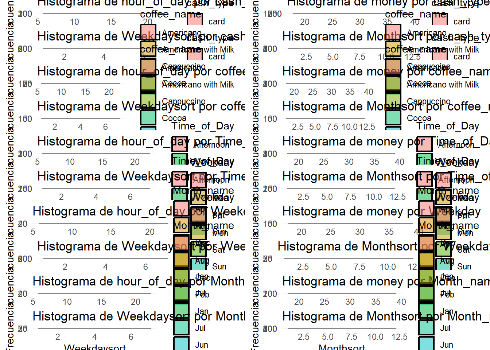
`stat_bin()` using `bins = 30`. Pick better value with `binwidth`.
`stat_bin()` using `bins = 30`. Pick better value with `binwidth`.
`stat_bin()` using `bins = 30`. Pick better value with `binwidth`.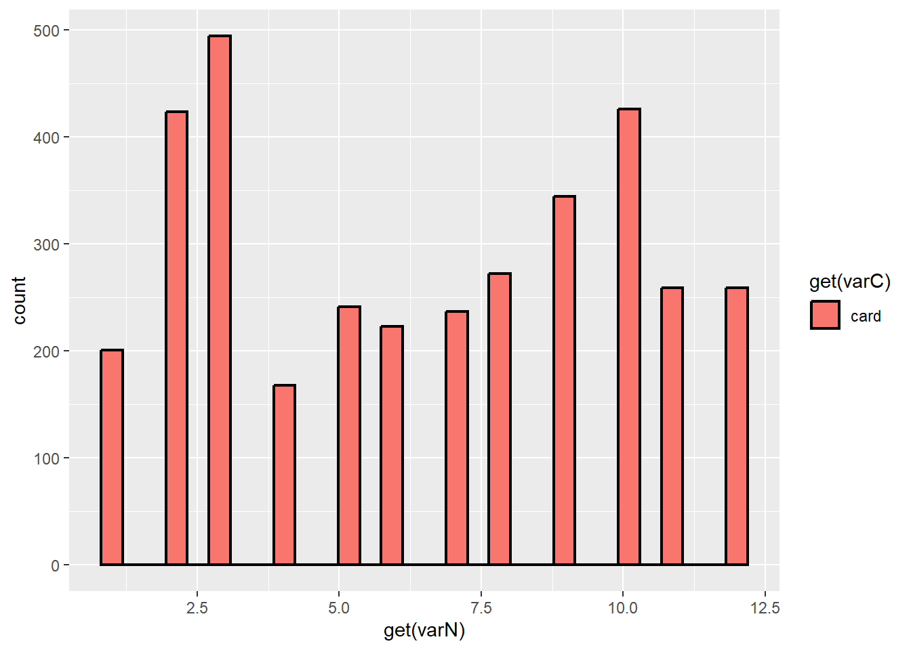
`stat_bin()` using `bins = 30`. Pick better value with `binwidth`.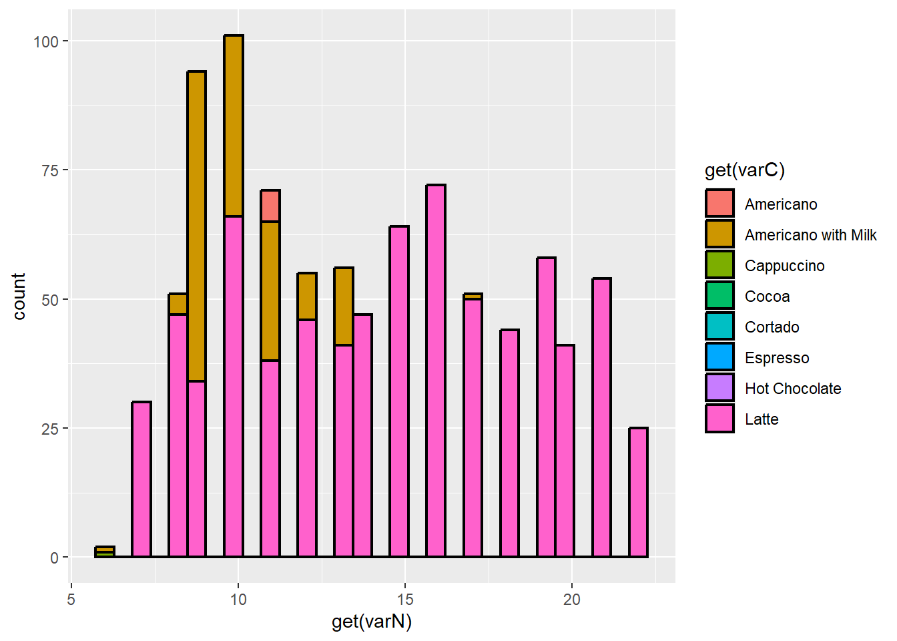
`stat_bin()` using `bins = 30`. Pick better value with `binwidth`.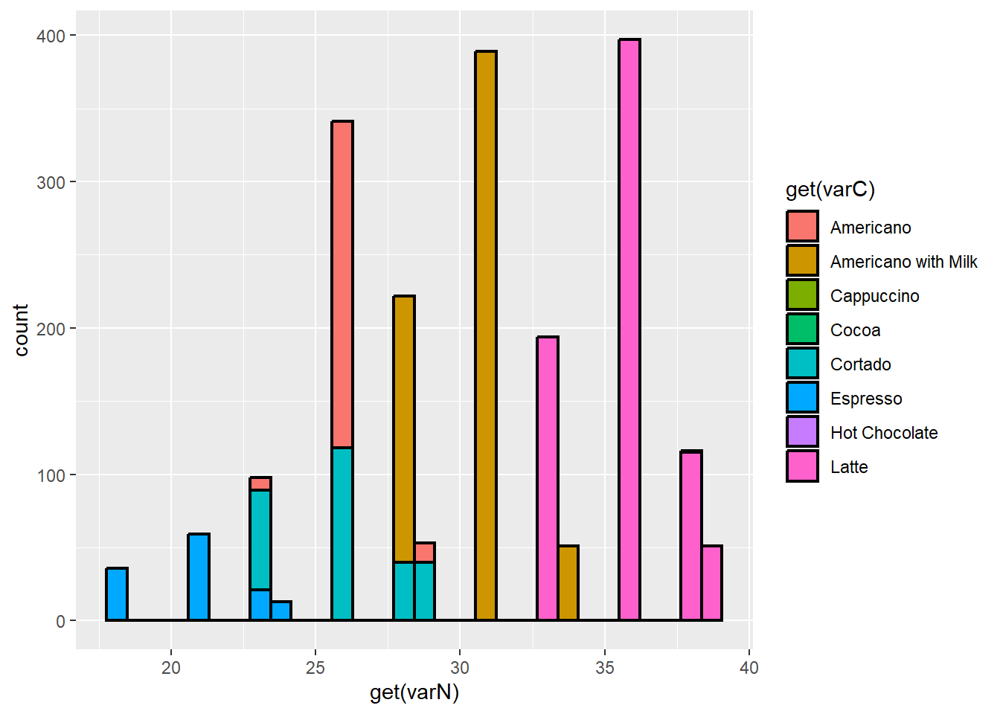
`stat_bin()` using `bins = 30`. Pick better value with `binwidth`.
`stat_bin()` using `bins = 30`. Pick better value with `binwidth`.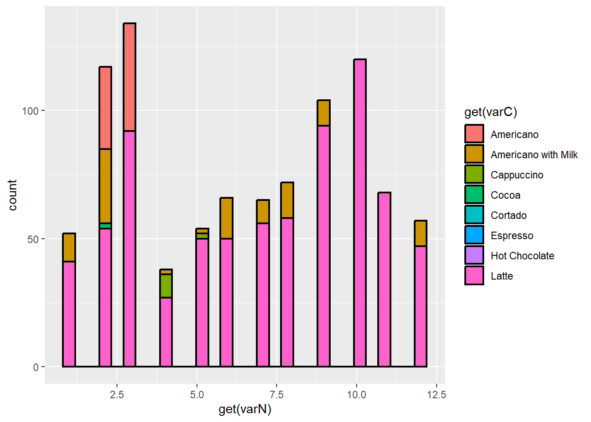
`stat_bin()` using `bins = 30`. Pick better value with `binwidth`.
`stat_bin()` using `bins = 30`. Pick better value with `binwidth`.
`stat_bin()` using `bins = 30`. Pick better value with `binwidth`.`stat_bin()` using `bins = 30`. Pick better value with `binwidth`.
`stat_bin()` using `bins = 30`. Pick better value with `binwidth`.`stat_bin()` using `bins = 30`. Pick better value with `binwidth`.
`stat_bin()` using `bins = 30`. Pick better value with `binwidth`.
`stat_bin()` using `bins = 30`. Pick better value with `binwidth`.`stat_bin()` using `bins = 30`. Pick better value with `binwidth`.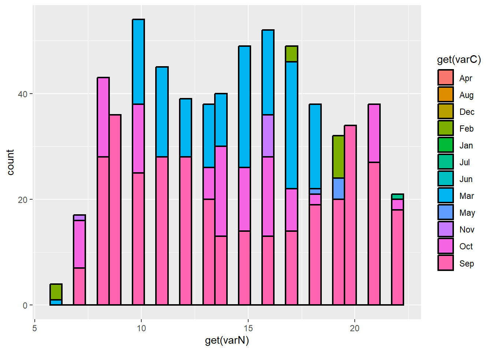
`stat_bin()` using `bins = 30`. Pick better value with `binwidth`.
`stat_bin()` using `bins = 30`. Pick better value with `binwidth`.
`stat_bin()` using `bins = 30`. Pick better value with `binwidth`.2.2.3 Categorical vs. categorical
2.2.3.1 Description
for (varc1 in varCat) {
for (varc2 in varCat) {
if (varc1 != varc2) {
prop_table <- prop.table(table(datos[, varc1], datos[, varc2]))
cat("=============", varc1, " vs. ", varc2, "=========================\n")
print(prop_table)
}
}
}============= cash_type vs. coffee_name =========================
Americano Americano with Milk Cappuccino Cocoa Cortado
card 0.15900761 0.22808007 0.13701720 0.06738089 0.08091345
Espresso Hot Chocolate Latte
card 0.03636876 0.07781224 0.21341979
============= cash_type vs. Time_of_Day =========================
Afternoon Morning Night
card 0.3397237 0.3329574 0.3273189
============= cash_type vs. Weekday =========================
Fri Mon Sat Sun Thu Tue Wed
card 0.1499859 0.1533690 0.1325063 0.1181280 0.1437835 0.1612630 0.1409642
============= cash_type vs. Month_name =========================
Apr Aug Dec Feb Jan Jul
card 0.04736397 0.07668452 0.07301945 0.11925571 0.05666761 0.06681703
Jun Mar May Nov Oct Sep
card 0.06287003 0.13927262 0.06794474 0.07301945 0.12010149 0.09698337
============= coffee_name vs. cash_type =========================
card
Americano 0.15900761
Americano with Milk 0.22808007
Cappuccino 0.13701720
Cocoa 0.06738089
Cortado 0.08091345
Espresso 0.03636876
Hot Chocolate 0.07781224
Latte 0.21341979
============= coffee_name vs. Time_of_Day =========================
Afternoon Morning Night
Americano 0.065689315 0.061742317 0.031575980
Americano with Milk 0.067380885 0.093318297 0.067380885
Cappuccino 0.046236256 0.034395264 0.056385678
Cocoa 0.021144629 0.016351847 0.029884409
Cortado 0.024809698 0.040315760 0.015787990
Espresso 0.015787990 0.012404849 0.008175923
Hot Chocolate 0.022554271 0.013814491 0.041443473
Latte 0.076120665 0.060614604 0.076684522
============= coffee_name vs. Weekday =========================
Fri Mon Sat Sun
Americano 0.029602481 0.026219340 0.019453059 0.012968706
Americano with Milk 0.029038624 0.036086834 0.033831407 0.027910911
Cappuccino 0.017479560 0.020016916 0.019453059 0.019734987
Cocoa 0.014660276 0.009585565 0.006484353 0.006766281
Cortado 0.010431350 0.009867494 0.015787990 0.011840992
Espresso 0.005920496 0.002819284 0.003946997 0.004510854
Hot Chocolate 0.012686778 0.009867494 0.006766281 0.011277136
Latte 0.030166338 0.038906118 0.026783197 0.023118128
Thu Tue Wed
Americano 0.023118128 0.022836200 0.024809698
Americano with Milk 0.029038624 0.040315760 0.031857908
Cappuccino 0.021708486 0.017761489 0.020862701
Cocoa 0.006484353 0.016069918 0.007330138
Cortado 0.011840992 0.012404849 0.008739780
Espresso 0.007612067 0.004510854 0.007048210
Hot Chocolate 0.013532563 0.013814491 0.009867494
Latte 0.030448266 0.033549478 0.030448266
============= coffee_name vs. Month_name =========================
Apr Aug Dec Feb
Americano 0.0093036369 0.0104313504 0.0076120665 0.0329856217
Americano with Milk 0.0107132788 0.0202988441 0.0160699182 0.0239639132
Cappuccino 0.0101494220 0.0095855653 0.0107132788 0.0146602763
Cocoa 0.0011277136 0.0031012123 0.0059204962 0.0157879899
Cortado 0.0045108542 0.0112771356 0.0087397801 0.0028192839
Espresso 0.0011277136 0.0039469975 0.0033831407 0.0047927826
Hot Chocolate 0.0028192839 0.0016915703 0.0073301381 0.0090217085
Latte 0.0076120665 0.0163518466 0.0132506343 0.0152241331
Jan Jul Jun Mar
Americano 0.0070482098 0.0101494220 0.0039469975 0.0377784043
Americano with Milk 0.0146602763 0.0183253454 0.0186072738 0.0231181280
Cappuccino 0.0076120665 0.0090217085 0.0129687059 0.0163518466
Cocoa 0.0039469975 0.0025373555 0.0011277136 0.0101494220
Cortado 0.0062024246 0.0039469975 0.0053566394 0.0084578517
Espresso 0.0014096420 0.0039469975 0.0028192839 0.0053566394
Hot Chocolate 0.0042289259 0.0031012123 0.0039469975 0.0121229208
Latte 0.0115590640 0.0157879899 0.0140964195 0.0259374119
May Nov Oct Sep
Americano 0.0112771356 0.0070482098 0.0124048492 0.0090217085
Americano with Milk 0.0152241331 0.0146602763 0.0231181280 0.0293205526
Cappuccino 0.0146602763 0.0073301381 0.0124048492 0.0115590640
Cocoa 0.0022554271 0.0098674937 0.0090217085 0.0025373555
Cortado 0.0047927826 0.0036650691 0.0095855653 0.0115590640
Espresso 0.0019734987 0.0008457852 0.0033831407 0.0033831407
Hot Chocolate 0.0036650691 0.0104313504 0.0163518466 0.0031012123
Latte 0.0140964195 0.0191711305 0.0338314068 0.0265012687
============= Time_of_Day vs. cash_type =========================
card
Afternoon 0.3397237
Morning 0.3329574
Night 0.3273189
============= Time_of_Day vs. coffee_name =========================
Americano Americano with Milk Cappuccino Cocoa Cortado
Afternoon 0.065689315 0.067380885 0.046236256 0.021144629 0.024809698
Morning 0.061742317 0.093318297 0.034395264 0.016351847 0.040315760
Night 0.031575980 0.067380885 0.056385678 0.029884409 0.015787990
Espresso Hot Chocolate Latte
Afternoon 0.015787990 0.022554271 0.076120665
Morning 0.012404849 0.013814491 0.060614604
Night 0.008175923 0.041443473 0.076684522
============= Time_of_Day vs. Weekday =========================
Fri Mon Sat Sun Thu Tue
Afternoon 0.04849168 0.04990133 0.05469411 0.04736397 0.04764590 0.04510854
Morning 0.05441218 0.05441218 0.04426276 0.03383141 0.04116154 0.05835918
Night 0.04708204 0.04905554 0.03354948 0.03693262 0.05497604 0.05779532
Wed
Afternoon 0.04651818
Morning 0.04651818
Night 0.04792783
============= Time_of_Day vs. Month_name =========================
Apr Aug Dec Feb Jan Jul
Afternoon 0.02058077 0.02001692 0.02199041 0.04961940 0.02114463 0.01606992
Morning 0.01127714 0.03411334 0.02537356 0.03326755 0.01719763 0.02762898
Night 0.01550606 0.02255427 0.02565548 0.03636876 0.01832535 0.02311813
Jun Mar May Nov Oct Sep
Afternoon 0.01522413 0.06146039 0.02199041 0.02847477 0.03834226 0.02480970
Morning 0.01888920 0.04623626 0.01691570 0.02368198 0.04341697 0.03495912
Night 0.02875670 0.03157598 0.02903862 0.02086270 0.03834226 0.03721455
============= Weekday vs. cash_type =========================
card
Fri 0.1499859
Mon 0.1533690
Sat 0.1325063
Sun 0.1181280
Thu 0.1437835
Tue 0.1612630
Wed 0.1409642
============= Weekday vs. coffee_name =========================
Americano Americano with Milk Cappuccino Cocoa Cortado
Fri 0.029602481 0.029038624 0.017479560 0.014660276 0.010431350
Mon 0.026219340 0.036086834 0.020016916 0.009585565 0.009867494
Sat 0.019453059 0.033831407 0.019453059 0.006484353 0.015787990
Sun 0.012968706 0.027910911 0.019734987 0.006766281 0.011840992
Thu 0.023118128 0.029038624 0.021708486 0.006484353 0.011840992
Tue 0.022836200 0.040315760 0.017761489 0.016069918 0.012404849
Wed 0.024809698 0.031857908 0.020862701 0.007330138 0.008739780
Espresso Hot Chocolate Latte
Fri 0.005920496 0.012686778 0.030166338
Mon 0.002819284 0.009867494 0.038906118
Sat 0.003946997 0.006766281 0.026783197
Sun 0.004510854 0.011277136 0.023118128
Thu 0.007612067 0.013532563 0.030448266
Tue 0.004510854 0.013814491 0.033549478
Wed 0.007048210 0.009867494 0.030448266
============= Weekday vs. Time_of_Day =========================
Afternoon Morning Night
Fri 0.04849168 0.05441218 0.04708204
Mon 0.04990133 0.05441218 0.04905554
Sat 0.05469411 0.04426276 0.03354948
Sun 0.04736397 0.03383141 0.03693262
Thu 0.04764590 0.04116154 0.05497604
Tue 0.04510854 0.05835918 0.05779532
Wed 0.04651818 0.04651818 0.04792783
============= Weekday vs. Month_name =========================
Apr Aug Dec Feb Jan Jul
Fri 0.007048210 0.009585565 0.008175923 0.020016916 0.011277136 0.010995207
Mon 0.008175923 0.011559064 0.011559064 0.024809698 0.008175923 0.006766281
Sat 0.006484353 0.013250634 0.011277136 0.009303637 0.009021708 0.007612067
Sun 0.006484353 0.010431350 0.012122921 0.009021708 0.002819284 0.006766281
Thu 0.006484353 0.012404849 0.007893995 0.017761489 0.010431350 0.007612067
Tue 0.007330138 0.009867494 0.012686778 0.015787990 0.007893995 0.013814491
Wed 0.005356639 0.009585565 0.009303637 0.022554271 0.007048210 0.013250634
Jun Mar May Nov Oct Sep
Fri 0.007330138 0.025091627 0.009021708 0.012122921 0.018325345 0.010995207
Mon 0.007612067 0.019453059 0.010431350 0.009585565 0.018325345 0.016915703
Sat 0.009867494 0.020298844 0.005638568 0.014942205 0.010713279 0.014096420
Sun 0.010995207 0.011277136 0.009867494 0.008175923 0.014096420 0.016069918
Thu 0.009303637 0.018889202 0.013532563 0.009867494 0.018043417 0.011559064
Tue 0.008739780 0.021426558 0.010149422 0.013250634 0.021990414 0.018325345
Wed 0.009021708 0.022836200 0.009303637 0.005074711 0.018607274 0.009021708
============= Month_name vs. cash_type =========================
card
Apr 0.04736397
Aug 0.07668452
Dec 0.07301945
Feb 0.11925571
Jan 0.05666761
Jul 0.06681703
Jun 0.06287003
Mar 0.13927262
May 0.06794474
Nov 0.07301945
Oct 0.12010149
Sep 0.09698337
============= Month_name vs. coffee_name =========================
Americano Americano with Milk Cappuccino Cocoa Cortado
Apr 0.0093036369 0.0107132788 0.0101494220 0.0011277136 0.0045108542
Aug 0.0104313504 0.0202988441 0.0095855653 0.0031012123 0.0112771356
Dec 0.0076120665 0.0160699182 0.0107132788 0.0059204962 0.0087397801
Feb 0.0329856217 0.0239639132 0.0146602763 0.0157879899 0.0028192839
Jan 0.0070482098 0.0146602763 0.0076120665 0.0039469975 0.0062024246
Jul 0.0101494220 0.0183253454 0.0090217085 0.0025373555 0.0039469975
Jun 0.0039469975 0.0186072738 0.0129687059 0.0011277136 0.0053566394
Mar 0.0377784043 0.0231181280 0.0163518466 0.0101494220 0.0084578517
May 0.0112771356 0.0152241331 0.0146602763 0.0022554271 0.0047927826
Nov 0.0070482098 0.0146602763 0.0073301381 0.0098674937 0.0036650691
Oct 0.0124048492 0.0231181280 0.0124048492 0.0090217085 0.0095855653
Sep 0.0090217085 0.0293205526 0.0115590640 0.0025373555 0.0115590640
Espresso Hot Chocolate Latte
Apr 0.0011277136 0.0028192839 0.0076120665
Aug 0.0039469975 0.0016915703 0.0163518466
Dec 0.0033831407 0.0073301381 0.0132506343
Feb 0.0047927826 0.0090217085 0.0152241331
Jan 0.0014096420 0.0042289259 0.0115590640
Jul 0.0039469975 0.0031012123 0.0157879899
Jun 0.0028192839 0.0039469975 0.0140964195
Mar 0.0053566394 0.0121229208 0.0259374119
May 0.0019734987 0.0036650691 0.0140964195
Nov 0.0008457852 0.0104313504 0.0191711305
Oct 0.0033831407 0.0163518466 0.0338314068
Sep 0.0033831407 0.0031012123 0.0265012687
============= Month_name vs. Time_of_Day =========================
Afternoon Morning Night
Apr 0.02058077 0.01127714 0.01550606
Aug 0.02001692 0.03411334 0.02255427
Dec 0.02199041 0.02537356 0.02565548
Feb 0.04961940 0.03326755 0.03636876
Jan 0.02114463 0.01719763 0.01832535
Jul 0.01606992 0.02762898 0.02311813
Jun 0.01522413 0.01888920 0.02875670
Mar 0.06146039 0.04623626 0.03157598
May 0.02199041 0.01691570 0.02903862
Nov 0.02847477 0.02368198 0.02086270
Oct 0.03834226 0.04341697 0.03834226
Sep 0.02480970 0.03495912 0.03721455
============= Month_name vs. Weekday =========================
Fri Mon Sat Sun Thu Tue
Apr 0.007048210 0.008175923 0.006484353 0.006484353 0.006484353 0.007330138
Aug 0.009585565 0.011559064 0.013250634 0.010431350 0.012404849 0.009867494
Dec 0.008175923 0.011559064 0.011277136 0.012122921 0.007893995 0.012686778
Feb 0.020016916 0.024809698 0.009303637 0.009021708 0.017761489 0.015787990
Jan 0.011277136 0.008175923 0.009021708 0.002819284 0.010431350 0.007893995
Jul 0.010995207 0.006766281 0.007612067 0.006766281 0.007612067 0.013814491
Jun 0.007330138 0.007612067 0.009867494 0.010995207 0.009303637 0.008739780
Mar 0.025091627 0.019453059 0.020298844 0.011277136 0.018889202 0.021426558
May 0.009021708 0.010431350 0.005638568 0.009867494 0.013532563 0.010149422
Nov 0.012122921 0.009585565 0.014942205 0.008175923 0.009867494 0.013250634
Oct 0.018325345 0.018325345 0.010713279 0.014096420 0.018043417 0.021990414
Sep 0.010995207 0.016915703 0.014096420 0.016069918 0.011559064 0.018325345
Wed
Apr 0.005356639
Aug 0.009585565
Dec 0.009303637
Feb 0.022554271
Jan 0.007048210
Jul 0.013250634
Jun 0.009021708
Mar 0.022836200
May 0.009303637
Nov 0.005074711
Oct 0.018607274
Sep 0.0090217082.2.3.2 Graphic
for (varc1 in varCat) {
for (varc2 in varCat) {
if (varc1 != varc2) {
prop_table <- prop.table(table(datos[, varc1], datos[, varc2]))
barplot(prop_table, beside = TRUE)
}
}
}
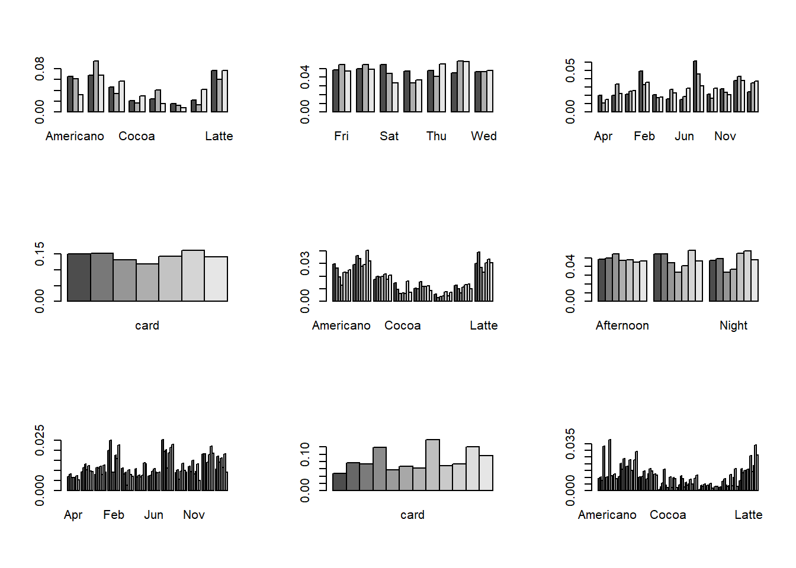
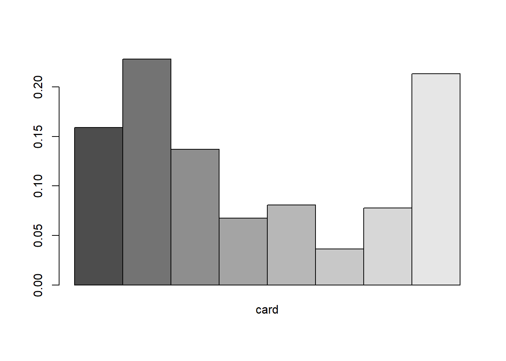

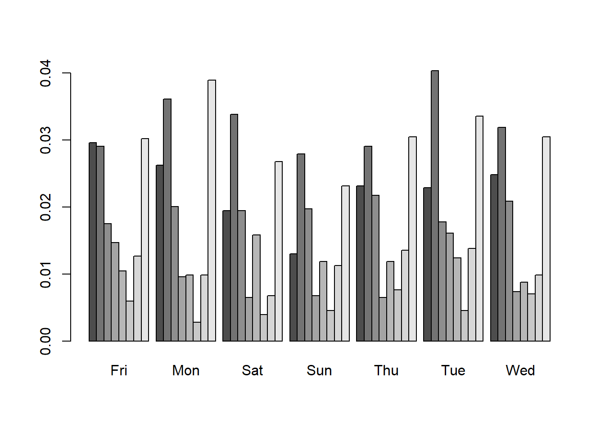


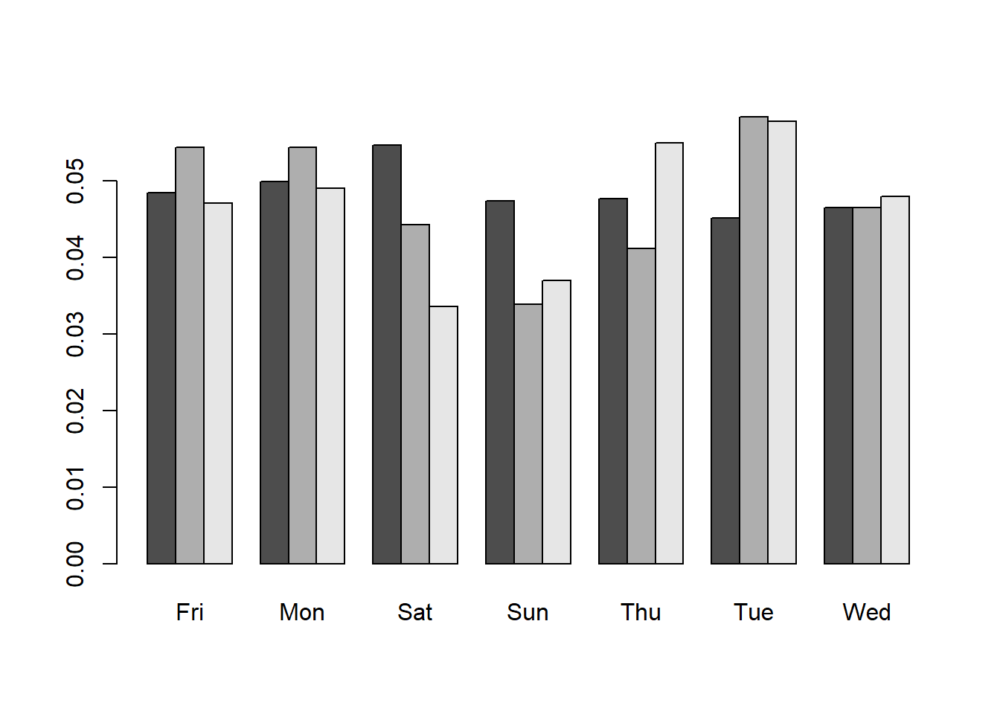

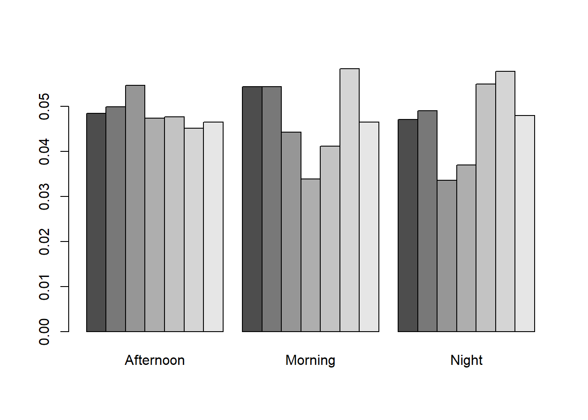


Esta web está creada por Dante Conti y Sergi Ramírez, (c) 2024